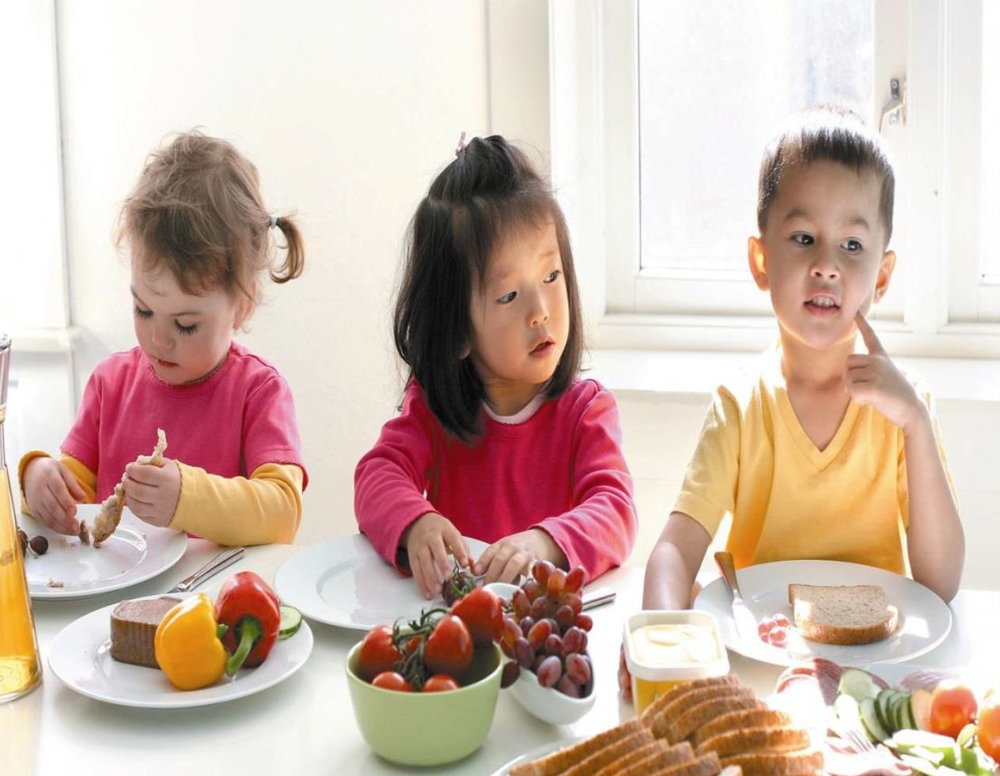
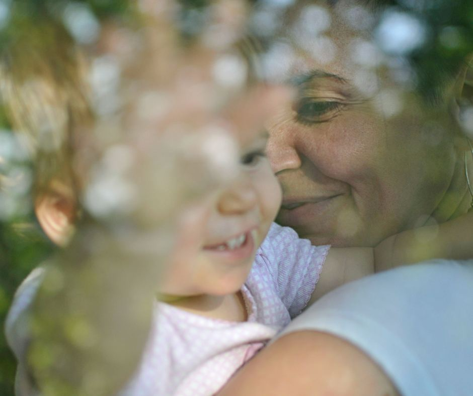

Fag
Kvalitet er ikke et skjema. Det er en vane.
Alle vikarene våre går gjennom intervju, referansesjekk og et obligatorisk vikarmøte. Men det er oppfølgingen etterpå som gjør forskjellen i hverdagen.
Vikarmøtet
Før en vikar går ut i sin første barnehage, møter de oss. Vi går gjennom hva som forventes: møtetid, taushetsplikt, hvordan man tar imot beskjeder, og hvordan man er en rolig voksen når dagen ikke går som planlagt.
Møtet er obligatorisk for alle, også for dem med lang erfaring. Ikke fordi de ikke kan faget, men fordi hver barnehage har sine rutiner — og vikaren skal komme forberedt.
- ✓TaushetspliktHva som ikke snakkes om, og hvorfor det gjelder fra første minutt.
- ✓RutinerFrokost, bleieskift, soving, henting — og hvem man spør.
- ✓RollerHva en vikar kan ta ansvar for, og hva som alltid skal løftes til de faste ansatte.

Allergikofferten
Et hjerteprosjekt for oss.
Målet med kofferten er å bedre hverdagen til barn med matvareoverfølsomhet i barnehager og skolefritidsordninger.
Hva kofferten inneholder
Ressurser og materiell som gjør det enklere for personalet å snakke med barna om allergier — og å lage trygge måltidssituasjoner.
Hvorfor det betyr noe
Et barn som ikke kan spise det samme som de andre, må merke det hver dag. Personalet trenger språk og rutiner for å gjøre det mildt — og tydelig nok til at det er trygt.
Faglig påfyll har vi alltid gjort
I vår administrasjon arbeider det førskolelærere og andre med erfaring fra barnehage på sentrale Østlandet. Det er ikke et papir-krav — det er derfor vi kan lese et behov når en styrer beskriver en avdeling over telefonen.
Vi bruker også vikarmøtene til å løfte faglige temaer: språk i hverdagen, overgang til skole, og hvordan man tar imot et barn som gråter ved levering.
